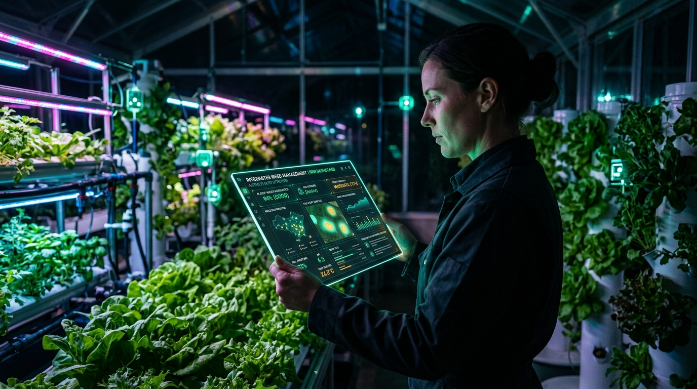
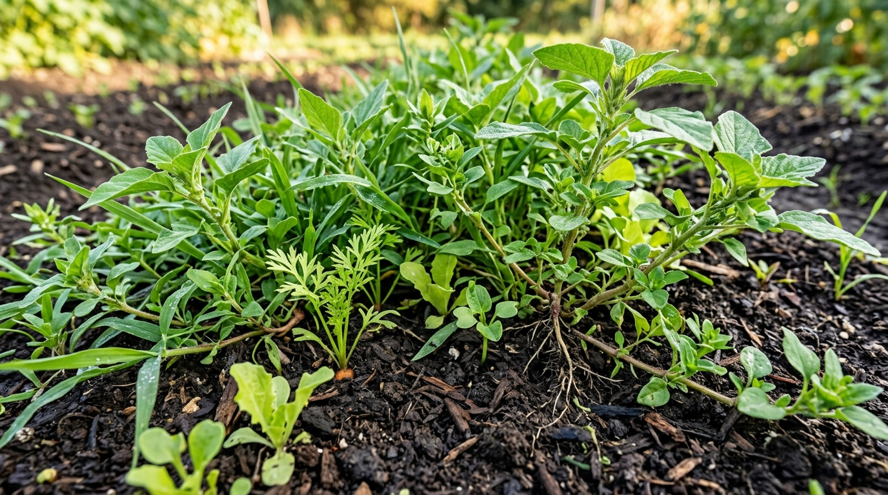
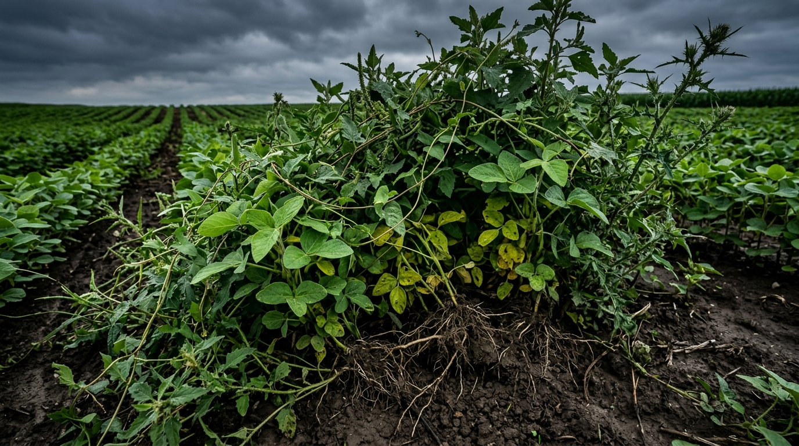
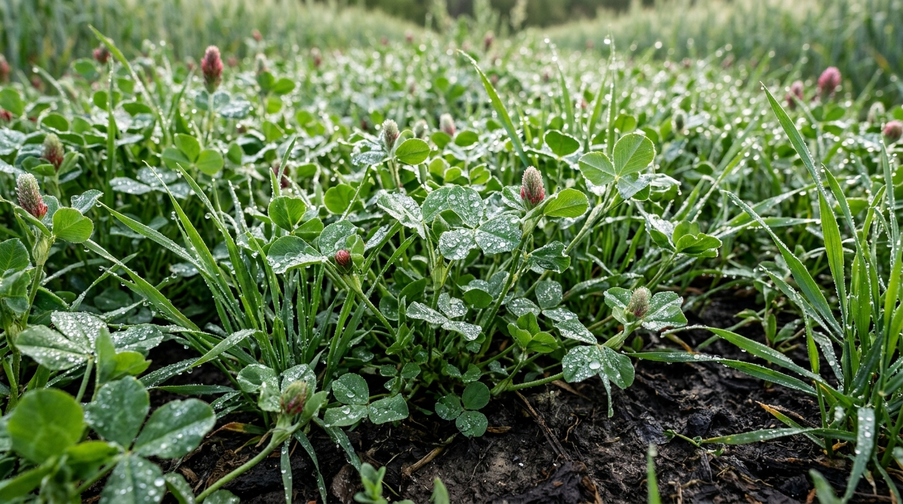
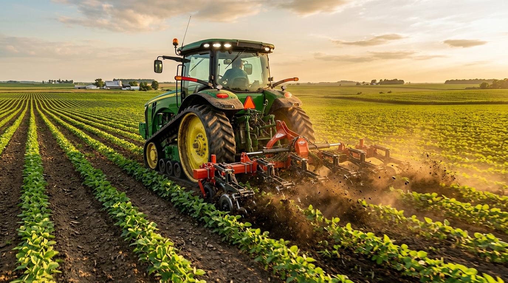
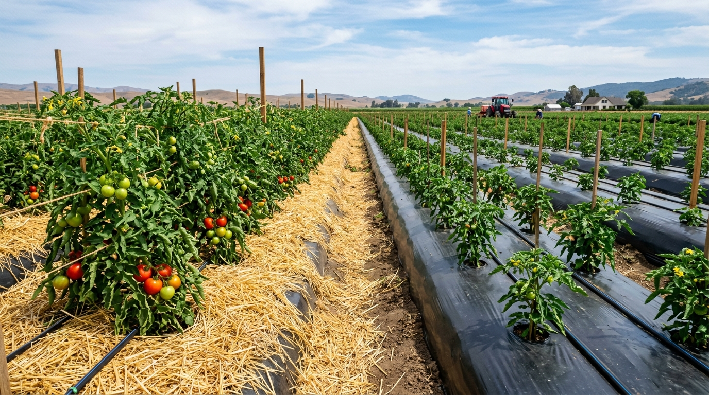
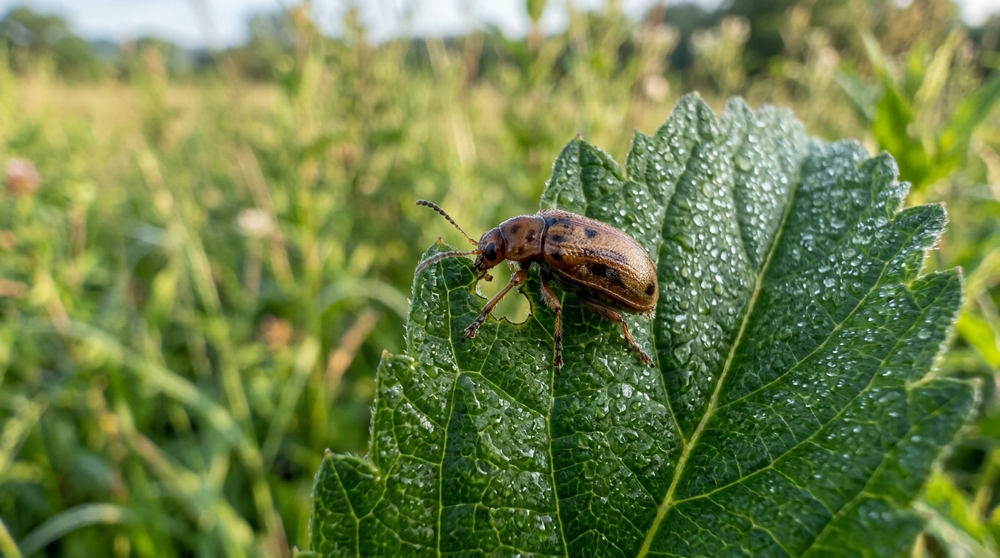
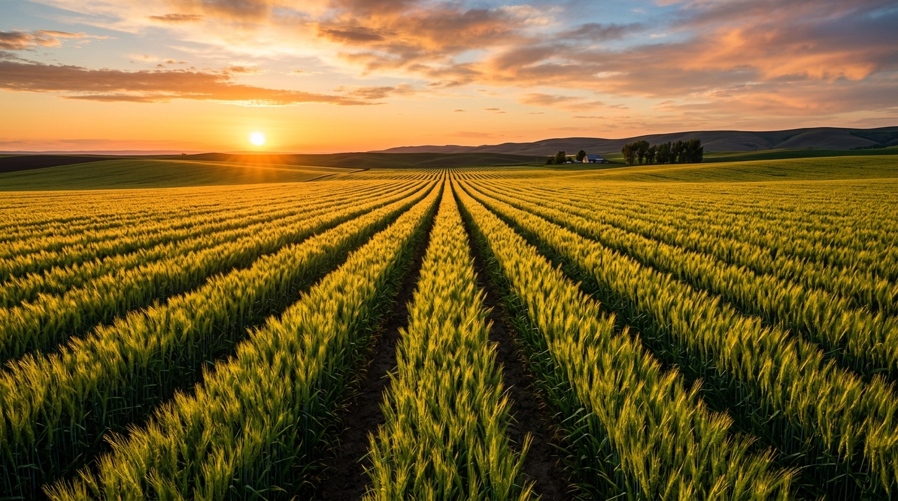

Weed Management in Agriculture
A simple, complete guide to weed control techniques, principles, and methods.
• Meaning of Weed & Weed Management
• Importance & Core Principles
• Preventive, Cultural, Mechanical & Biological Methods
• Mulching Methods (Organic & Plastic)
• Advantages & Practical Limitations

Meaning: What is a Weed & Weed Management?

A weed is any plant growing where it is not wanted (e.g. wild plants competing with farm crops for food, water, and sunlight).
The practice of controlling unwanted weeds so crops can grow healthy, receive full soil nutrients, and produce good harvest yields.
Weeds steal sunlight, water, space, and fertilizers from the main crop, reducing overall harvest quality and quantity.
Why Weed Management is Important

Weeds steal sunlight, space, and nutrients. Controlling weeds prevents large yield losses.
Weeds absorb water and fertilizers rapidly. Management ensures inputs feed the crops, not weeds.
Weeds act as breeding and hiding grounds for harmful insects, viruses, and fungi.
Clean fields yield weed-free grain and vegetables that command premium market prices.
Core Principles of Weed Management
Stop weed seeds before they enter the farm. Keeping seeds out is much cheaper than removing grown weeds.
Keep crops weed-free during the first 20 to 35 days. After that, the crop canopy naturally shades out late weeds.
Use cultural, mechanical, and biological tools together instead of relying on only one single method.
Never let weeds flower and produce seeds. Removing weeds early reduces weed pressure in future seasons.
Preventive Methods: Stopping Weeds at the Gate
Cultural Methods: Agronomic Farming Practices

Water the field early, let weeds sprout, kill them with light raking, then sow your crop in a clean bed.
Alternate different crops each season to disrupt the life cycles of specific weeds.
Plant crops at recommended spacing so the crop canopy closes fast and shades out weeds.
Grow fast-growing cover crops between rows to blanket the soil and smother weeds naturally.
Mechanical Methods: Physical Tools & Machinery

Physically pulling or cutting weeds using hand tools like a hoe or khurpi around crop plants.
Using tractor-mounted rotary weeders to uproot weeds quickly between crop rows.
Cutting tall weeds before flowering along borders and orchard alleys.
Covering moist soil with clear plastic sheets in hot sun to kill topsoil weed seeds.
Mulching Methods: Organic & Plastic Covers

Covering bare soil to block sunlight so weed seeds cannot sprout, while conserving moisture.
Using straw or crop waste that naturally breaks down into soil organic matter.
Laying black plastic sheets over raised beds; widely used in vegetable and fruit farming.
Blocks 90%+ weeds, saves 50% water, and protects soil temperature.
Biological Methods: Natural Weed Control

Releasing insects that feed exclusively on specific problem weeds without touching crops.
Using targeted natural fungi or bio-agents that weaken specific weed plants.
Using ducks in rice fields or grazing animals in orchards to eat weeds naturally.
Zero chemical residues, safe for soil, pollinators, and farm workers.
Advantages & Practical Limitations
✔ Higher Crop Yields: Full sunlight and nutrients.
✔ Saves Water & Fertilizer: Inputs nourish the crop.
✔ Better Produce Quality: Clean harvest commands top price.
✔ Fewer Pests & Diseases: Breaks pest hiding spots.
✔ Long-term Soil Health: Reduces future weed seeds.
✖ High Labor Demand: Hand weeding is labor-intensive.
✖ Equipment Costs: Tractors and mulch need upfront money.
✖ Weather Dependence: Heavy rain delays mechanical weeding.
✖ Plastic Waste: Plastic mulch needs proper disposal after harvest.
Conclusion: 5 Key Golden Rules
1. Start Clean: Always use certified clean seeds and sanitized equipment.
2. Act Early: Keep crops weed-free during the critical first 30 days of growth.
3. Protect the Soil: Use organic or plastic mulch to conserve water and block weeds.
4. Combine Methods: Integrate cultural, mechanical, and biological practices.
5. Prevent Seed Setting: Remove weeds before they flower to stop future weed buildup.
Thank You!
🌾 THANK YOU!
Thank you for your valuable time and attention.
Healthy Crops • Thriving Farms • Higher Yields
💬 Questions, comments, and discussion are welcome!
